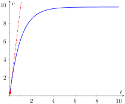

Section8.3First Order Linear Differential Equations
In the previous section, we explored a specific techique to solve a specific type of differential equation called a separable differential equation. In this section, we develop and practice a technique to solve a type of differential equation called a first order linear differential equation.
Recall than a linear algebraic equation in one variable is one that can be written \(ax + b = 0\text{,}\) where \(a\) and \(b\) are real numbers. Notice that the variable \(x\) appears to the first power. The equations \(\sqrt{x}+1=0\) and \(\sin(x)-3x = 0\) are both nonlinear. A linear differential equation is one in which the dependent variable and its derivatives appear only to the first power. We focus on first order equations, which involve first (but not higher order) derivatives of the dependent variable.
Subsection8.3.1Solving First Order Linear Equations
Definition8.3.1.First Order Linear Differential Equation.
A first order linear differential equation is a differential equation that can be written in the form
Both. We identify \(p(x) = -x\) and \(q(x) = 0\text{.}\) The separated form of the equation is \(\displaystyle \frac{dy}{y} = x\,dx\text{.}\)
Neither. The \(e^y\) term makes the equation nonlinear. Because of the addition, it is not possible to write the equation in separated form.
First order linear. We identify \(p(x) = -\cos(x)\) and \(q(x) = \cos(x)\text{.}\) The equation cannot be written in separated form.
Neither. Notice that dividing by \(y\) results in the nonlinear term \(\displaystyle \frac{4\ln(x)}{y}\text{.}\) It is not possible to write the equation in separated form.
Notice that linearity depends on the dependent variable \(y\text{,}\) not the independent variable \(x\text{.}\) The functions \(p(x)\) and \(q(x)\) need not be linear, as demonstrated in part (c) of Example 8.3.2. Neither \(\cos(x)\) nor \(\sin(x)\) are linear functions of \(x\text{,}\) but the differential equation is still linear.
Before working out a general technique for solving first order linear differential equations, we look at a specific example. Consider the differential equation
This is an easy differential equation to solve. On the left, the antiderivative of the derivative is simply the function \(xy\text{.}\) Using the substitution \(u = \sin(x)\) on the right and integrating results in the implicit solution
\begin{equation*}
xy = \frac{1}{2}\sin^2 x + C\text{.}
\end{equation*}
Solving for \(y\) yields the explicit solution
\begin{equation*}
y = \frac{\sin^2 x}{2x} + \frac{C}{x}\text{.}
\end{equation*}
Though not obvious, the differential equation above is actually a linear differential equation. Using the product rule and implicit differentiation, we can write \(\displaystyle \frac{d}{dx}\big(xy\big) = x\frac{dy}{dx} + y\text{.}\) Our original differential equation can be written
\begin{equation*}
x\frac{dy}{dx} + y = \sin(x) \cos(x)\text{.}
\end{equation*}
If we divide by \(x\text{,}\) we have
\begin{equation*}
\frac{dy}{dx} + \frac{1}{x} y = \frac{\sin(x) \cos(x)}{x}\text{,}
\end{equation*}
which matches the form in Definition 8.3.1. Reversing our steps would lead us back to the original form our our differential equation.
As motivated by the problem we just explored, the basic idea behind solving first order linear differential equations is to multiply both sides of the differential equation by a function, called an integrating factor, that makes the left hand side of the equation look like an expanded Product Rule. We then condense the left hand side into the derivative of a product and integrate both sides. An obvious question is, “How do you find this integrating factor?”
Our goal is to choose \(\mu(x)\) so that the left hand side of the differential equation looks like the result of a Product Rule. The left hand side of the equation is
In order for the integrating factor \(\mu(x)\) to perform its job, it must solve the differential equation above. But that differential equation is separable, so we can solve it. The separated form is
Integrating and solving for \(y\text{,}\) the explicit solution is
\begin{equation*}
y = \frac{1}{\mu(x)}\int \bigl( \mu(x)q(x) \bigr)\,dx\text{.}
\end{equation*}
Though this formula can be used to write down the solution to a first order linear equation, we shy away from simply memorizing a formula. The process is lost, and it's easy to forget the formula. Rather, we always always follow the steps outlined in Key Idea 8.3.3 when solving equations of this type.
Key Idea8.3.3.Solving First Order Linear Equations.
We solve by following the steps in Key Idea 8.3.3. Unlike the process for solving separable equations, we need not worry about losing constant solutions. The answer we find will be the general solution to the differential equation. We first write the equation in the form
Solving for \(y\text{,}\) the explicit solution is
\begin{equation*}
y = \frac{1}{2}x^3\ln(x) - \frac{1}{4}x^3 + Cx\text{.}
\end{equation*}
The initial condition \(y(1) = 0\) yields \(C = 1/4\text{.}\) The solution to the initial value problem is
\begin{equation*}
y = \frac{1}{2}x^3\ln(x) - \frac{1}{4}x^3 + \frac{1}{4}x\text{.}
\end{equation*}
Differential equations are a valuable tool for exploring various physical problems. This process of using equations to describe real world situations is called mathematical modeling, and is the topic of the next section. The last two examples in this section begin our discussion of mathematical modeling.
Example8.3.7.A Falling Object Without Air Resistance.
Suppose an object with mass \(m\) is dropped from an airplane. Find and solve a differential equation describing the vertical velocity of the object assuming no air resistance.
The basic physical law at play is Newton's second law,
\begin{equation*}
\text{ mass } \times \text{ acceleration } = \text{ the sum of the forces }\text{.}
\end{equation*}
Using the fact that acceleration is the derivative of velocity, mass × acceleration can be writting \(mv'\text{.}\) In the absence of air resistance, the only force of interest is the force due to gravity. This force is approximately constant, and is given by \(mg\text{,}\) where \(g\) is the gravitational constant. The word equation above can be written as the differential equation
Because \(g\) is constant, this differential equation is simply an integration problem, and we find
\begin{equation*}
v = gt + C\text{.}
\end{equation*}
Since \(v = C\) with \(t=0\text{,}\) we see that the arbitrary constant here corresponds to the initial vertical velocity of the object.
The process of mathematical modeling does not stop simply because we have found an answer. We must examine the answer to see how well it can describe real world observations. In the previous example, the answer may be somewhat useful for short times, but intuition tells us that something is missing. Our answer says that a falling object's velocity will increase linearly as a function of time, but we know that a falling object does not speed up indefinitely. In order to more fully describe real world behavior, our mathematical model must be revised.
Example8.3.8.A Falling Object with Air Resistance.
Suppose an object with mass \(m\) is dropped from an airplane. Find and solve a differential equation describing the vertical velocity of the object, taking air resistance into account.
We still begin with Newon's second law, but now we assume that the forces in the object come both from gravity and from air resistance. The gravitational force is still given by \(mg\text{.}\) For air resistance, we assume the force is related to the velocity of the object. A simple way to describe this assumption might be \(kv^{p}\text{,}\) where \(k\) is a proportionality constant and \(p\) is a positive real number. The value \(k\) depends on various factors such as the density of the object, surface area of the object, and density of the air. The value \(p\) affects how changes in the velocity affect the force. Taken together, a function of the form \(kv^{p}\) is often called a power law. The differential equation for the velocity is given by
(Notice that the force from air resistance opposes motion, and points in the opposite direction as the force from gravity.) This differential equation is separable, and can be written in the separated form
For arbitrary positive \(p\text{,}\) the integration is difficult, making this problem hard to solve analytically. In the case that \(p=1\text{,}\) the differential equation becomes linear, and is easy to solve either using either separation of variables or integrating factor techniques. We assume \(p=1\text{,}\) and proceed with an integrating factor so we can continue practicing the process. Writing
\begin{equation*}
v = \frac{mg}{k}+ Ce^{-\frac{k}{m}t}\text{.}
\end{equation*}

Figure8.3.9.The velocity functions from Examples 8.3.7 (dashed) and Example 8.3.8 (solid) under the assumption that \(v(0)=0\text{,}\) with \(g=9.8, m=1\text{,}\) and \(k=1\)
In the solution above, the exponential term decays as time increases, causing the velocity to approach the constant value \(mg/k\) in the limit as \(t\) approaches infinity. This value is called the terminal velocity. If we assume a zero initial velocity (the object is dropped, not thrown from the plane), the velocities from Examples 8.3.7 and Example 8.3.8 are given by \(v = gt\) and \(v = \displaystyle \frac{mg}{k}\left (1 - e^{-\frac{k}{m}t}\right )\text{,}\) respectively. These two functions are shown in Figure 8.3.9, with \(g = 9.8, m=1\text{,}\) and \(k=1\text{.}\) Notice that the two curves agree well for short times, but have dramatically different behaviors as \(t\) increases. Part of the art in mathematical modeling is deciding on the level of detail required to answer the question of interest. If we are only interested in the initial behavior of the falling object, the simple model in Example 8.3.7 may be sufficient. If we are interested in the longer term behavior of the object, the simple model is not sufficient, and we should consider a more complicated model.
Exercises8.3.2Exercises
Problems
Exercise Group.
In the following exercises, Find the general solution to the first order linear differential equation.
1.
\(\displaystyle \yp = 2y - 3\)
2.
\(\displaystyle x^2\yp + xy = 1\)
3.
\(\displaystyle x^2\yp - xy = 1\)
4.
\(\displaystyle x\yp +4y = x^3-x\)
5.
\(\displaystyle (\cos^2 x \sin(x))\yp + (\cos^3 x)y = 1\)
6.
\(\displaystyle \frac{\yp}{x} = 1-2y\)
7.
\(\displaystyle x^3\yp-3x^3y=x^4e^{2x}\)
8.
\(\displaystyle \yp + y = 5\sin(2x)\)
Exercise Group.
In the following exercises, Find the particular solution to the initial value problem.
9.
\(\displaystyle \yp = y + 2xe^x\text{,}\)\(y(0) = 2\)
In the following exercises, classify the differential equation as separable, first order linear, or both, and solve the initial value problem using an appropriate method.
17.
\(\displaystyle \yp = y + yx^2\text{,}\)\(y(0) = -5\)
In the following exercises, draw a slope field for the differential equation. Use the slope field to predict the behavior of the solution to the initial value problem for large \(x\) values. Solve the initial value problem, and verify your prediction.
21.
\(\displaystyle \yp = x-y\text{,}\)\(y(0) = 0\)
22.
\(\displaystyle (X+1)\yp + y = \frac{1}{x+1}\text{,}\)\(y(0) = 2\)